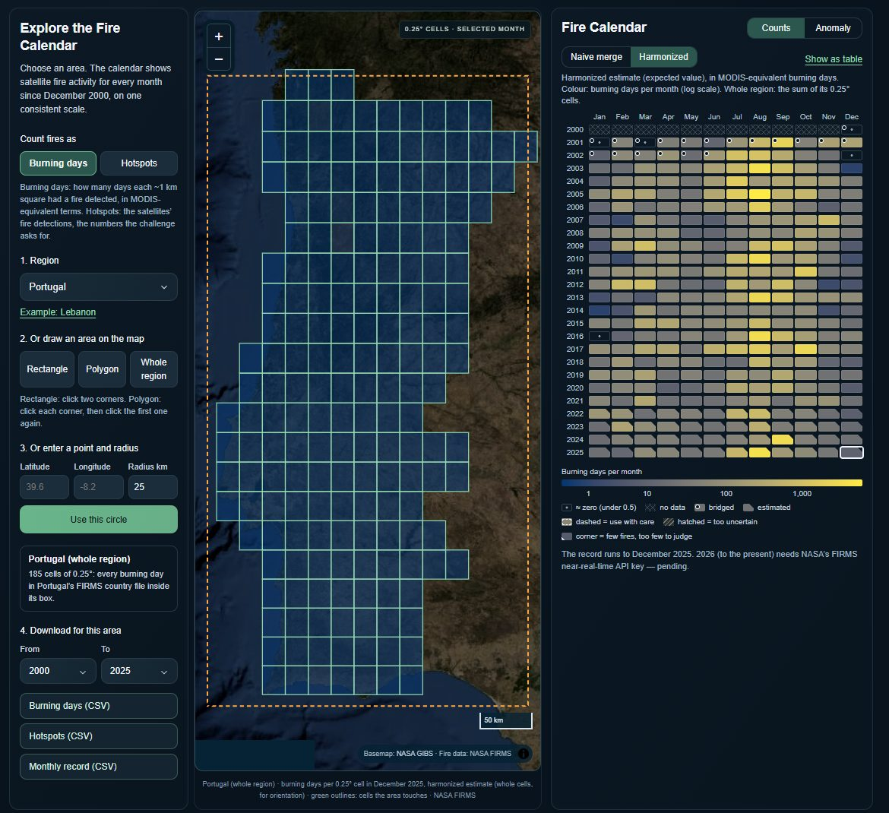
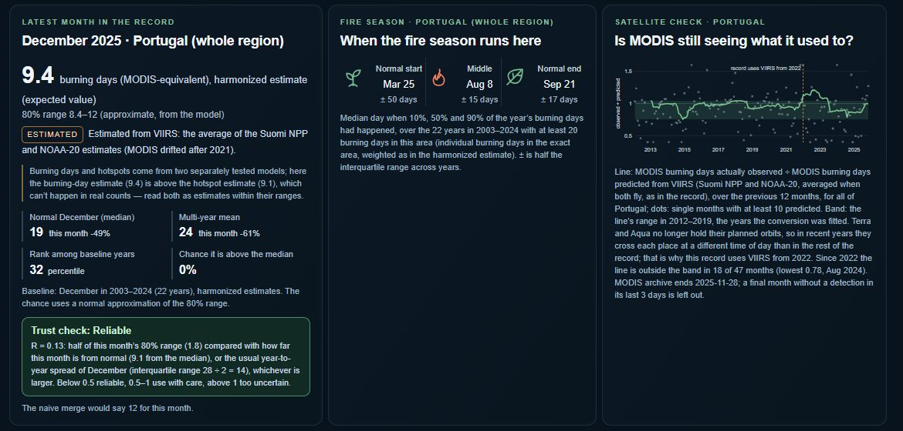
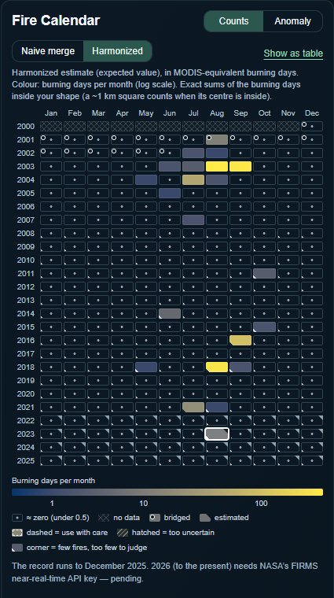

Team update for the NASA Space Apps 2026 challenge Harmonization of MODIS and VIIRS Hot Spots: what we built, how we tested it, what failed, what worked, and what's left before the event. Plain English throughout.
"A 25-year fire calendar that stays consistent when the old satellites switch off, and we can prove it."
Every month from Dec 2000 to Dec 2025, for Portugal and Lebanon, on one consistent scale.
Both models we ship passed every test on 4 regions they had never seen (8 regions in total).
When Suomi NPP retired (2 Nov 2026), the replacement satellite NOAA-20 gives the same answer 97% of the time.
Old fire satellites (MODIS) and new ones (VIIRS) count fires differently, like two thermometers that disagree. We built a "translator" so the whole 25 years reads as if one instrument measured it, then tested that translator like an exam: on places it had never studied, with the marking rules fixed in advance. It passed.
It's like counting cars for 12 years with a blurry camera, then switching to a sharp one. The sharp camera counts more cars, not because traffic grew but because it sees motorbikes. Join the two counts naively and you invent a traffic boom.
Meanwhile the old camera has been knocked slightly sideways (drift), and it's about to be unplugged.
| Years | Numbers come from | Why |
|---|---|---|
| Dec 2000 – mid 2002 | Real MODIS (Terra only), adjusted ("bridged") | Aqua hadn't launched yet |
| mid 2002 – 2021 | Real MODIS measurements | MODIS flying on schedule; no model needed |
| 2022 → today | Our translator: VIIRS → "what MODIS would have seen" | MODIS drifted and is retiring; VIIRS carries on |
Every step followed the same rule: write the test down, commit it to GitHub, and only then run it. That's how you show you didn't adjust the answer after seeing it.
We treated the algorithm like a student. It studied on some regions, then sat a final exam on regions it had never seen, with the marking rules fixed in advance. The first student failed and we said so. We fixed the specific problems, and the next two passed. Each exam used new regions, because re-sitting the same exam proves nothing.
| Test (all on regions never seen) | Pass mark | Exam 1 | Exam 2 · hotspots | Exam 3 · burning days |
|---|---|---|---|---|
| Accuracy, small areas (cell-month error) | no worse than the simple method | 67.4% vs 60.1% | 55.8% vs 60.9% | 29.7% vs 36.2% |
| Honest ranges (80% ranges contain the truth) | 70–90% | 85% | 83% | 84% |
| Total fire count | within ±10% | (not tested) | +3.7% | +6.9% |
| National monthly accuracy | no worse than the simple method | (not tested) | 19.2% | 11.6% |
| Survives the satellite handover | ≥ 80% agree | 69% | 92.1% | 97.3% |
| Verdict | NOT CONFIRMED | CONFIRMED | CONFIRMED |
For comparison, naively gluing the two satellites together is off by 371% on exam 2's regions. Exam 1's regions were Morocco, Tunisia, central Chile and the Western Cape; exam 2's central Spain, southern Italy, SW Australia and southern California; exam 3's northern Algeria, southern France, South Australia and northern California.
Cell-month error is how far off a small area's monthly count is. It's naturally large because small counts are random (3 fires vs 6 is mostly luck). National monthly error is for a whole region per month; that's what a fire chief plans with, and 11.6% is good. Honest ranges means our "give or take" is trustworthy.
Most competitors test their model on the same data they built it on, or never test it at all. We wrote the rules first, failed once in public, fixed it, and passed twice on 8 new regions across 4 continents. That's what NASA's "Best Use of Science" award describes.
Imagine forecasting how many fires a country will have in a month. Ours is typically within about 12% at country level, and it tells you honestly when it's unsure. It also keeps working now that the satellites are being replaced.
Each satellite pixel flagged as burning counts as one. Simple, but the new satellite splits one fire into many small pixels, so the two satellites disagree a lot.
Model: "A2", confirmed in exam 2.
Divide the map into ~1 km squares. Each square counts once per day if any fire was detected in it. This cancels most of the "split into many pixels" problem, so the satellites agree much better.
Model: "D-a", confirmed in exam 3.
It's a currency converter with an exchange rate for every place and season. Where we have lots of data, the local rate is used. Where data is thin, it leans on the regional rate. For burning days it uses different rates for small and big fires, because the old satellite misses small fires more.
It's deliberately simple. The fancy machine-learning and physics models we tried did not beat it.
Every number shows Reliable Use with care Too uncertain, or "Few fires, too few to judge". This compares our uncertainty with how unusual the month is. Small, quiet areas honestly say "can't judge" instead of painting false alarms. No competitor does this.

Real screenshot. Left: choose the unit (burning days or hotspots), a region, draw a shape or enter a point and radius, download CSVs. Middle: the map. Right: the 25-year calendar (rows are years, columns are months; brighter means more fire).

A month with 3 fires vs 6 is mostly chance. Month-by-month error in small cells is about 30–55%. The trust check says "few fires, too few to judge" there, instead of guessing.
In about 7 of 301 Portugal months (11 in Lebanon), the burning-days estimate comes out above the hotspots estimate. That's impossible in reality, so the app shows a note saying both are estimates.
About 21% of recent VIIRS burning days in Lebanon fall in fire-power classes that never matched a MODIS fire in that season (2012–2019), so they count as zero. The app flags each affected month.
Portugal and Lebanon have the full 25 years downloaded. Other regions only have the years our tests needed. Adding more is easy (page 11).
We'd rather show a judge an honest "here's where it's weak" than have them find it. Every limitation above is visible in the app or the documents, and every failure is published.
| What judges look for | Typical competitor | CEDRUS |
|---|---|---|
| App works when a judge clicks it | About half: dead backends, 404s, nothing deployed | Static site, no server, under 1 s load, 233 automated checks needs to go online |
| Honest testing | Mostly tested on training data; some tune on test years | Rules committed first; 3 sealed exams on 12 regions; failure published |
| Survives Suomi NPP's retirement | Most use Suomi NPP only, so their record stops | NOAA-20 calibrated and tested: 97% agreement |
| Uncertainty | Ranges drawn, but alerts ignore them | Every month graded by a trust check |
| CSV | Mostly aggregate tables | Raw hotspots + burning days + monthly with ranges; sums match exactly |
| Coverage | One team covers 208 countries (no uncertainty) | 2 regions so far (easy to add more) |
Other teams have more countries or flashier designs. None we've seen can say "we tested it on places it had never seen, under rules fixed in advance, and it passed twice". That's the story we tell.

This is the calendar for a 12 km circle in southern Portugal. Most months are "≈ zero" (small dots). The bright cells are real fire years such as 2003 and 2018. The corner marks say "few fires, too few to judge", so the app doesn't pretend to know.
Draw your village, valley or district and you get its own 25-year fire calendar. The download gives exactly the fires behind every number, so anyone can check our work.
| MODIS units (what we built) | VIIRS units (option) | |
|---|---|---|
| 2000–2011 | Real MODIS | Estimated (scale MODIS up) |
| 2012 → today | Real MODIS to 2021, estimated from 2022 | Real VIIRS |
| Small fires | Left out (MODIS can't see them) | Included (VIIRS's "greater detail") |
| This month | Always an estimate | A real measurement |
The challenge mentions VIIRS's "greater detail", and several competitors chose VIIRS units. We'd test it the same honest way (about 1 day). Recommendation: offer both, as a switch.
The repo is private, so the site is offline. Options: make the repo public (simplest, free GitHub Pages), or keep the code private and host the site on Netlify or Cloudflare Pages. Space Apps needs a public link at submission either way.
Each region needs its missing years downloaded (about 15–40 minutes each). Suggested: Lebanon's neighbours (Syria, Jordan, Israel/Palestine, Cyprus, Turkey, Greece) for the Beirut story, and La Rioja, Argentina (the challenge authors' own example, Chilecito July 2026).
NASA's archive now runs to July/August 2026, plus near-real-time data to today. With our API key the calendar can reach "the present", as the challenge asks.
| When | What | Who |
|---|---|---|
| This week | Decide going online + VIIRS-units view; add 2026 data and Chilecito; add Eastern Mediterranean regions | Hussein + Claude |
| This week | Lebanon analysis: fire calendar, the south vs the rest, burning-ban window (docs/tasks/ANALYST_LEBANON.md) | Data analyst |
| By 9 Nov | Stop model work; freeze what ships | Team |
| 9–13 Nov | Project page, AI-use statement, Apache-2.0 license, credits, 30-second video or 7 slides | Team |
| 13 Nov | Read the 2026 judging guide and submission guide (published that day); adjust | Team |
| 14–15 Nov | Event: polish, rehearse the demo, submit before 23:59 local | Everyone |
0–3 s "NASA's oldest fire satellites are going dark." · 3–8 s the 2012 jump, naive vs ours · 8–20 s draw an area → calendar → "above normal, reliable" → CSV · 20–27 s "Tested on 8 places it had never seen. It passed." · 27–30 s "CEDRUS, Beirut."
Private GitHub repo hyounes-svg/cedrus (ask Hussein for access): the app (web/), the pipeline (pipeline/), every plan and result (docs/), and all research notes (docs/research/). Run the app locally: python -m http.server 8000 -d web, then open http://localhost:8000.